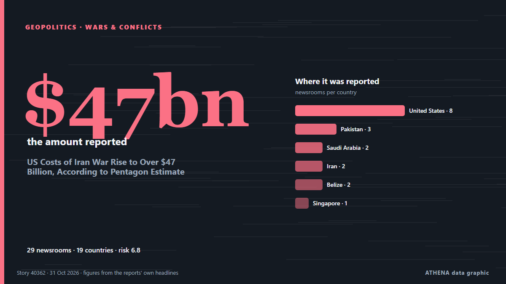

US Costs of Iran War Rise to Over $47 Billion, According to Pentagon Estimate

More than $6 billion would be needed to replace military equipment and 'platform losses' de Express Tribune
Informado de forma independiente por 29 medios de 19 países desde el 27 oct; el primero fue The Hill; la cobertura va perdiendo fuerza. ATHENA califica el riesgo como alto (6.8/10), sobre todo por la gravedad del daño descrito y su alcance geográfico y sectorial. La confianza es del 92 % (alta): lo corroboran 29 medios independientes, con una fiabilidad media de las fuentes del 77 %. Quién lo informó: 8 medios en Estados Unidos · United States, 2 medios en Arabia Saudí · Saudi Arabia, 2 medios en Irán · Iran. La cobertura fue de 27 oct a 31 oct, durante 77 horas.
Por qué importa: Los hechos de seguridad y diplomacia pueden alterar alianzas, comercio y mercados mucho más allá de los países implicados.
Qué ha cambiado: 1 información nueva en las 24 horas hasta el 31 oct.
Primer titular: US costs of Iran war rise to over US$47 billion, according to Pentagon estimate
Los titulares se muestran en inglés, tal como se publicaron.
De un vistazo
Seleccionado, puntuado y redactado por la metodología publicada de ATHENA. Ningún editor interviene en eventos concretos. Cómo se elabora ›
| 27 Oct 23:32 UTC | 6 |
|---|---|
| 28 Oct 02:32 UTC | 8 |
| 28 Oct 05:32 UTC | 2 |
| 28 Oct 08:32 UTC | 1 |
| 28 Oct 11:32 UTC | 1 |
| 28 Oct 14:32 UTC | 1 |
| 28 Oct 17:32 UTC | 4 |
| 28 Oct 20:32 UTC | 0 |
| 28 Oct 23:32 UTC | 0 |
| 29 Oct 02:32 UTC | 0 |
| 29 Oct 05:32 UTC | 0 |
| 29 Oct 08:32 UTC | 1 |
| 29 Oct 11:32 UTC | 0 |
| 29 Oct 14:32 UTC | 2 |
| 29 Oct 17:32 UTC | 0 |
| 29 Oct 20:32 UTC | 1 |
| 29 Oct 23:32 UTC | 0 |
| 30 Oct 02:32 UTC | 0 |
| 30 Oct 05:32 UTC | 0 |
| 30 Oct 08:32 UTC | 0 |
| 30 Oct 11:32 UTC | 0 |
| 30 Oct 14:32 UTC | 0 |
| 30 Oct 17:32 UTC | 0 |
| 30 Oct 20:32 UTC | 0 |
| 30 Oct 23:32 UTC | 0 |
| 31 Oct 02:32 UTC | 1 |
| 27 Oct 23:50 UTC | 4.6 |
|---|---|
| 28 Oct 00:26 UTC | 5.8 |
| 28 Oct 08:38 UTC | 6.7 |
| 29 Oct 11:56 UTC | 6.7 |
| 31 Oct 04:24 UTC | 6.8 |
Por qué estas cifras
Importancia
Riesgo
Confianza
La cobertura: quién informó y cuándo
titular tal como se publicó · abre el original- The Hill · Estados Unidos · United StatesIran war cost increases to $47 billion
- Express Tribune · Pakistán · PakistanUS costs of Iran war rise to over $47 billion, according to Pentagon estimate
- Arab News · Arabia Saudí · Saudi ArabiaUS costs of Iran war rise to over $47 billion, according to Pentagon estimate
- The Straits Times · Singapur · SingaporeUS costs of Iran war rise to over US$47 billion, according to Pentagon estimate
- Free Malaysia Today · Malasia · MalaysiaUS costs of Iran war rise to over US$47bil, Pentagon estimates
- Al-Monitor · Estados Unidos · United StatesUS costs of Iran war rise to over $47 billion, according to Pentagon estimate
- Rappler · Filipinas · PhilippinesUS costs of Iran war rise to over $47B – Pentagon data
- NDTV · IndiaUS Cost Of Iran War Rises Over $47 Billion, 25% More Than Estimated
- Daily Maverick · Sudáfrica · South AfricaUS costs of Iran war rise to over $47bn, according to Pentagon estimate
- CNBC World · Estados Unidos · United StatesTrump says Iran war will end 'when I want it to' as costs reportedly balloon to $47 billion
- CBS News (World) · Estados Unidos · United StatesIran war has cost $47 billion, U.S. military says
- Bangkok Post — page reader · Tailandia · ThailandIran war cost rises to $47.1 billion, Pentagon told lawmakers
- Mehr News (English) · Irán · IranUS spent more than $47bn on Iran war, Pentagon data shows
- Kurdistan24 (English) · Irak · IraqPentagon: Cost Of Iran Military Operations Rises 25% To Over $47 Billion
- Asharq Al-Awsat (English) · Arabia Saudí · Saudi ArabiaUS Costs of Iran War Rise to Over $47 Billion, According to Pentagon Estimate
- The New Arab · INTUS costs of Iran war rise to over $47 billion: Pentagon
- The Independent · Reino Unido · United KingdomSecret Pentagon files reveal Pete Hegseth’s Iran war price tag has surged by over 25 percent
- Al-Monitor · Estados Unidos · United StatesIran war has cost Pentagon more than $47B: What to know
- The Canadian Press (via CityNews) · Canadá · CanadaIran war’s cost to American taxpayers grows to an estimated $47.1 billion
- Defense News · Estados Unidos · United StatesUS costs of Iran war rise to over $47 billion, according to Pentagon estimate
- Tehran Times · Irán · IranUS-Iran war bill reaches $47.1 billion
- PBS NewsHour · Estados Unidos · United StatesAmerican taxpayers' bill for Iran war grows to estimated $47.1 billion
- Defense News · Estados Unidos · United StatesCost estimate for Iran war rises to more than $47 billion
- Al Jazeera English · Catar · QatarPentagon says Iran war has cost US taxpayers $47bn: What that means
- Breaking Belize News · Belice · BelizeIran war, high fuel prices and tourism slowdown put US midterms on Belize’s radar
- Breaking Belize News · Belice · BelizeIran war tops US$47 billion as Belizeans feel the pain through higher fuel and electricity costs
- CGTN (World) · ChinaCost of the US war with Iran
- APA (English) · Azerbaiyán · AzerbaijanUS military estimates war with Iran now costs $47.1 billion